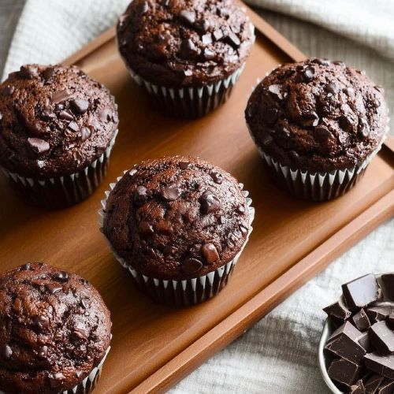

Chocolade muffins
Bron: laurasbakery.nl
Beschrijving
Een eenvoudig recept, met een heerlijk eindresultaat: chocolade muffins. Hier kun je natuurlijk ook weer lekker mee variëren.

Ingrediënten
- donkerbruine basterdsuiker - 120g
- bloem - 250g
- cacaopoeder - 50g
- bakpoeder - 1tl
- baking soda - 1tl
- snuf zout
- 2 eieren
- melk - 250ml
- zonnebloemolie 120ml
- melk chocolade chips - 100g
Instructies
- Voeg in eerste kom alle droge ingrediënten samen: suiker, bloem, cacaopoeder, bakpoeder, baking soda en zout. Meng de ingrediënten door elkaar.
- In een andere kom doe je de eieren, melk en zonnebloemolie. Mix met een garde door elkaar en voeg toe aan de kom met droge ingrediënten. Met een spatel meng je tot de droge ingrediënten zijn opgenomen. Het is niet erg als het beslag nog wat klonten bevat.
- Voeg de chocolade chips toe en spatel deze door het beslag.
- Met een ijsschep verdeel je het beslag over de muffinvormpjes. Strooi eventueel ook wat extra stukjes chocolade over de muffins.
- Bak de chocolade muffins in 1-20 minuten op 200°C (boven- en onderwarmte)